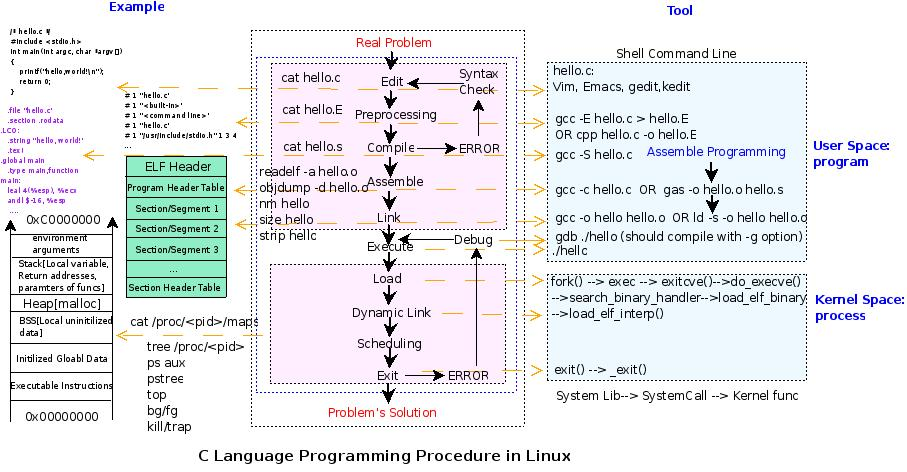

2007 年開始系統地學習 Shell 編程，並在蘭大開源社區寫了序列文章。
在編寫《Shell 編程範例》文章的《進程操作》一章時，為了全面瞭解進程的來龍去脈，對程序開發過程的細節、ELF 格式的分析、進程的內存映像等進行了全面地梳理，後來搞得“雪球越滾越大”，甚至脫離了 Shell 編程關注的內容。所以想了個小辦法，“大事化小，小事化了”，把涉及到的內容進行了分解，進而演化成另外一個完整的序列。
2008 年 3 月 1 日，當初步完成整個序列時，做了如下的小結：
到今天，關於"Linux 下 C 語言開發過程"的一個簡單視圖總算粗略地完成了，從寒假之前的一段時間到現在過了將近一個月左右吧。寫這個主題的目的源自“Shell 編程範例之進程操作”，當寫到這一章時，突然對進程的由來、本身和去向感到“迷惑不解”。所以想著好好花些時間來弄清楚它們，現在發現，這個由來就是這裡的程序開發過程，進程來自一個普通的文本文件，在這裡是 C 語言程序，C 語言程序經過編輯、預處理、編譯、彙編、鏈接、執行而成為一個進程；而進程本身呢？當一個可執行文件被執行以後，有了 exec 調用，被程序解釋器映射到了內存中，有了它的內存映像；而進程的去向呢？通過不斷地執行指令和內存映像的變化，進程完成著各項任務，等任務完成以後就可以退出了（exit）。
這樣一份視圖實際上是在寒假之前繪好的，可以從下圖中看到它；不過到現在才明白背後的很多細節。這些細節就是這個序列的每個篇章，可以對照“視圖”來閱讀它們。

目前整個序列大部分都已經以 Blog 的形式寫完，大體結構目下：
考慮到整個 Linux 世界的蓬勃發展，Linux 和 C 語言的應用環境越來越多，相關使用群體會不斷增加，所以最近計劃把該序列重新整理，以自由書籍的方式不斷更新，以便惠及更多的讀者。
打算重新規劃、增補整個序列，並以開源項目的方式持續維護，並通過 泰曉科技|TinLab.org 平臺接受讀者的反饋，直到正式發行出版。
自由書籍將會維護在 泰曉科技 的項目倉庫中。項目相關信息如下：
歡迎大家指出本書初稿中的不足，甚至參與到相關章節的寫作、校訂和完善中來。